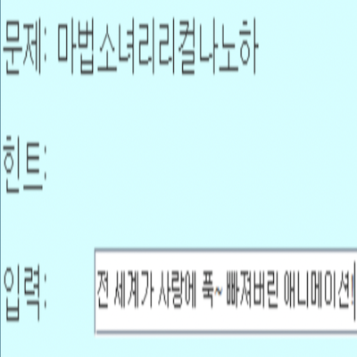
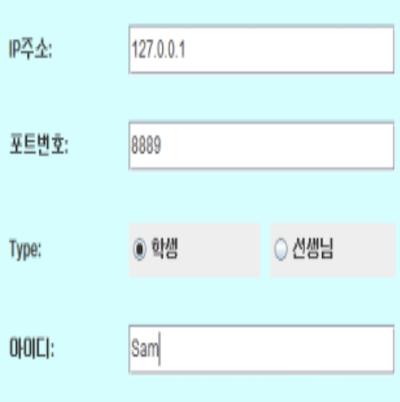

実装機能

|
答えを書く機能 生徒はクイズへの回答を入力できます。 正解を合わせれば、その生徒が先生になってクイズを出すことができます。 |
|  |
クイズを出題しヒントを教える機能 先生はクイズを出し、ヒントを与えることができます。 |

|
写真を送る機能 先生はヒントで写真を転送できます。 |
|  |
サーバーに接続する機能 オンライン子音クイズを続行するには、サーバーに接続する必要があります。 |
社会に貢献しようとしたこと
クリエイティブなゲームを制作してリリースするので、ゲームをしながら一味違う楽しさを感じることができます。
クリエイティブなゲームを制作してリリースするので、ゲームをしながら一味違う楽しさを感じることができます。
背景と目的
創造的なゲームを作って人々にサービスを提供するために、ゲーム開発者になることに備えて私だけのゲームを制作することになりました。
創造的なゲームを作って人々にサービスを提供するために、ゲーム開発者になることに備えて私だけのゲームを制作することになりました。
学んだこと
- JavaからMulti Threadへの非同期方式の活用方法とMulti Threadingの構造を学びました。
- 画像をbyteに変換して配列に保存する方法を学びました。
- Java Swingでクライアントを実装する方法を学びました。
- AWSでサーバーを構築した後の運用方法を学びました。
- Pythonでハングル文字列を処理する方法を学びました。
- Pythonでサーバーを構築する方法を学びました。
進行手順
- 「Javaの定石」の本でTCP / IPプログラミングの例を実行しました。
- Googleで「TCPソケットを使用したチャットプログラムの例」を見つけて、ソースコードを分析し、実装方法を学びました。 ここでは、例ではマルチスレッドで非同期方式を使用していました。
- 例を修正して実装方法をそのまま実装しました。
- 韓国語の単語から子音を抽出する方法がわからず、Googleで検索しました。
- の後には、画像を転送してヒントを知らせる機能も追加しました。 これは、画像をbyte arrayに変換して転送する方法を使用しました。
- このようにして目的のプログラムを実装できました。
能力強化のために最も努力したこと
Java Swingでクライアントを実装し、Pythonでサーバーを構築し、AWSで実行
Java Swingでクライアントを実装し、Pythonでサーバーを構築し、AWSで実行
全体構造

使用技術
Java, Python, TCP, AWS
Java, Python, TCP, AWS
開発環境
Eclipse IDE, Python IDLE, Terminal in Mac
Eclipse IDE, Python IDLE, Terminal in Mac
追加の説明